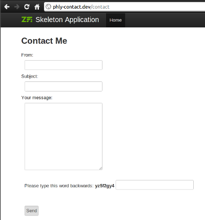

What provides us with controllers and routes?
The answer is: modules
I've created a module that simply provided SkeletonCSS in a way that I could easily drop it into a project. I have modules that are basically libraries, and contain source code, unit tests, and documentation. The point is, they can provide just about anything, because the only requirement is the Module class as an entry point.
module/
Foo/
Module.php
Which contains:
1 <?php
2 namespace Foo;
3
4 class Module { }
ModuleName/
Module.php
config/
module.config.php
public/
css/
images/
js/
src/
ModuleName/
... code ...
test/
ModuleName/
... code ...
view/
... templates, etc. ...
Commonly, we will provide DI and routing configuration.
1 <?php
2 namespace Foo;
3 use Zend\Module\Consumer\AutoloaderProvider;
4 class Module implements AutoloaderProvider
5 {
6 public function getAutoloaderConfig()
7 {
8 return array(
9 'Zend\Loader\ClassMapAutoloader' => array(
10 include __DIR__ . '/autoload_classmap.php',
11 ),
12 'Zend\Loader\StandardAutoloader' => array(
13 'namespaces' => array(
14 'Foo' => __DIR__ . '/src/Foo',
15 ),
16 ),
17 );
18 }
19 }
1 <?php
2 namespace Foo;
3
4 class Module
5 {
6 public function getConfig()
7 {
8 return include __DIR__
9 . '/config/module.config.php';
10 }
11 }
1 <?php
2 return array('di' => array(
3 'instance' => array(
4 'Zend\Mvc\Router\RouteStack' => array('parameters' => array(
5 'routes' => array(
6 'foo' => array(
7 'type' => 'Literal',
8 'options' => array(
9 'route' => '/foo',
10 'defaults' => array(
11 'controller' => 'Foo\Controller\IndexController',
12 ),
13 ),
14 'may_terminate' => true,
15 'child_routes' => aray( /* ... */ ),
16 )))))));
1 <?php
2 namespace Foo;
3 use Zend\EventManager\StaticEventManager,
4 Zend\Module\Manager as ModuleManager;
5 class Module
6 {
7 public function init(ModuleManager $manager)
8 {
9 $events = StaticEventManager::getInstance();
10 $events->attach(
11 'bootstrap', 'bootstrap',
12 array($this, 'bootstrap')
13 );
14 }
15
16 public function bootstrap($e)
17 {
18 $app = $e->getParam('application');
19 // do some stuff...
20 // Often, registering other listeners
21 }
22 }
1 <?php
2 namespace Foo;
3 /* ... */
4 class Module
5 {
6 /* ... */
7 public function bootstrap($e)
8 {
9 $app = $e->getParam('application');
10 $app->events()->attach('route', array($this, 'moduleCheck'), -100);
11 }
12
13 public function moduleCheck($e)
14 {
15 $matches = $e->getRouteMatch();
16 $controller = $matches->getParam('controller', '');
17 if (0 !== strpos($controller, __NAMESPACE__)) {
18 // Not our module
19 return;
20 }
21
22 // Do cool stuff!
23 }
24 }
Don't forget to register your module!
1 <?php
2 // config/application.config.php
3 return array(
4 'modules' => array(
5 'Application',
6 /* add your module to the list */
7 ),
8 'module_listener_options' => array(
9 /* ... */
10 ),
11 );
The idea now is to take the information we've got, and build a new module for the skeleton app I've handed around. We'll configure a mail transport and mail message, pass them into a controller, and do something with it all.
1 cd ZendSkeletonApplication
2 mkdir module/PhlyContact
3 cd module/PhlyContact
4 mkdir -p config src/PhlyContact view/contact
This sets up the basic structure we need for the files we'll be creating.
1 <?php
2 // module/PhlyContact/config/module.config.php
3 return array('di' => array('instance' => array(
4 'Zend\Mvc\Router\RouteStack' => array('parameters' => array(
5 'routes' => array(
6 'contact' => array(
7 'type' => 'Literal',
8 'options' => array(
9 'route' => '/contact',
10 'defaults' => array(
11 'controller' => 'PhlyContact\Controller\ContactController',
12 'action' => 'index',
13 ),
14 ),
15 'may_terminate' => true,
16 'child_routes' => array(/* ... */),
17 ),
18 ),
19 )),
20 )));
1 <?php
2 /* this is a child route */
3 'process' => array(
4 'type' => 'Literal',
5 'options' => array(
6 'route' => '/process',
7 'defaults' => array(
8 'action' => 'process',
9 ),
10 ),
11 ),
1 <?php
2 /* this is a child route */
3 'thank-you' => array(
4 'type' => 'Literal',
5 'options' => array(
6 'route' => '/thank-you',
7 'defaults' => array(
8 'action' => 'thank-you',
9 ),
10 ),
11 ),
1 <?php
2 // module/PhlyContact/src/PhlyContact/ContactForm.php
3 namespace PhlyContact;
4
5 use Zend\Captcha\Adapter as CaptchaAdapter,
6 Zend\Form\Form,
7 Zend\Validator\Hostname as HostnameValidator;
8
9 class ContactForm extends Form
10 {
11 protected $captchaAdapter;
12
13 public function __construct($captchaAdapter = null)
14 {
15 if ($options instanceof CaptchaAdapter) {
16 $this->setCaptchaAdapter($captchaAdapter);
17 parent::__construct(null);
18 return;
19 };
20
21 parent::__construct($captchaAdapterj);
22 }
23 /\* ... \*/
1 <?php
2 namespace PhlyContact;
3
4 use Zend\Captcha\Adapter as CaptchaAdapter,
5 Zend\Form\Form,
6 Zend\Validator\Hostname as HostnameValidator;
7
8 class ContactForm extends Form
9 {
10 /\* ... \*/
11 protected function setCaptchaAdapter(CaptchaAdapter $captcha)
12 {
13 $this->captchaAdapter = $captcha;
14 }
15 /\* ... \*/
1 <?php
2 namespace PhlyContact;
3
4 use Zend\Captcha\ReCaptcha,
5 Zend\Form\Form,
6 Zend\Validator\Hostname as HostnameValidator;
7
8 class ContactForm extends Form
9 {
10 public function init()
11 {
12 /\* setup all elements \*/
13 $this->addElement('captcha', 'captcha', array(
14 'required' => true,
15 'captcha' => $this->captchaAdapter,
16 ));
17 /\* finish setting up \*/
18 }
1 <?php
2 namespace PhlyContact\Controller;
3
4 use PhlyContact\ContactForm,
5 Zend\Mail\Transport,
6 Zend\Mail\Message as Message,
7 Zend\Mvc\Controller\ActionController,
8 Zend\View\Model\ViewModel;
9
10 class ContactController extends ActionController
11 {
12 protected $form;
13 protected $message;
14 protected $transport;
15
16 public function setMessage(Message $message) {
17 $this->message = $message;
18 }
19
20 public function setMailTransport(Transport $transport) {
21 $this->transport = $transport;
22 }
23
24 public function setContactForm(ContactForm $form) {
25 $this->form = $form;
26 }
1 <?php
2 public function indexAction()
3 {
4 return array('form' => $this->form);
5 }
1 <?php
2 public function processAction()
3 {
4 if (!$this->request->isPost()) {
5 $this->response->setStatusCode(302);
6 $this->response->headers()
7 ->addHeaderLine('Location', '/contact');
8 }
9 $post = $this->request->post()->toArray();
10 $form = $this->form;
11 if (!$form->isValid($post)) {
12 $model = new ViewModel(array(
13 'error' => true,
14 'form' => $form
15 ));
16 $model->setTemplate('contact/index');
17 return $model;
18 }
19
20 // send email...
21 $this->sendEmail($form->getValues());
22
23 return $this->redirect()->toRoute('contact/thank-you');
24 }
1 <?php
2 protected function sendEmail(array $data)
3 {
4 $from = $data['from'];
5 $subject = '[Contact Form] ' . $data['subject'];
6 $body = $data['body'];
7
8 $this->message->addFrom($from)
9 ->addReplyTo($from)
10 ->setSubject($subject)
11 ->setBody($body);
12 $this->transport->send($this->message);
13 }
1 <?php
2 public function thankYouAction()
3 {
4 $headers = $this->request->headers();
5 if (!$headers->has('Referer')
6 || !preg_match('#/contact$#',
7 $headers->get('Referer')->getFieldValue())
8 ) {
9 $this->response->setStatusCode(302);
10 $this->response->headers()
11 ->addHeaderLine('Location', '/contact');
12 return $this->response;
13 }
14
15 // do nothing...
16 return array();
17 }
1 <?php
2 // module/PhlyContact/view/contact/index.phtml
3 $this->headTitle()->prepend('Contact'); ?>
4 <section class="contact">
5 <h2>Contact Me</h2>
6
7 <?php if ($this->error): ?>
8 <p class="error">
9 There were one or more isues with your submission. Please correct them
10 as indicated below.
11 </p>
12 <?php endif ?>
13
14 <?php
15 $form = $this->form;
16 $form->setAction($this->url('contact/process'));
17 $form->setMethod('post');
18 echo $form->render($this);
1 <?php
2 // module/PhlyContact/view/contact/thank-you.phtml
3 $this->headTitle()->prepend('Contact');
4 $this->headTitle()->prepend('Thank You!');
5 ?>
6 <section class="contact">
7 <h2>Thank you!</h2>
8
9 <p>
10 Your message has been sent!
11 </p>
12 </section>
1 <?php
2 /* inside module/PhlyContact/config/module.config.php */
3 'di' => array(
4 'definition' => array('class' => array(
5 'PhlyContact\ContactForm' => array(
6 '__construct' => array(
7 'required' => true,
8 'captchaAdapter' => array(
9 'required' => true,
10 'type' => 'Zend\Captcha\Adapter',
11 ),
12 ),
13 ),
14 )),
15 ),
1 <?php
2 /* inside module/PhlyContact/config/module.config.php,
3 in the di -> definition array */
4 'Zend\Mail\Message' => array(
5 'addTo' => array(
6 'emailOrAddressList' => array(
7 'type' => false, 'required' => true),
8 'name' => array('type' => false, 'required' => false),
9 ),
10 'addFrom' => array(
11 'emailOrAddressList' => array(
12 'type' => false, 'required' => true),
13 'name' => array('type' => false, 'required' => false),
14 ),
15 'setSender' => array(
16 'emailOrAddressList' => array(
17 'type' => false, 'required' => true),
18 'name' => array('type' => false, 'required' => false),
19 ),
20 ),
Why? so we can specify the sender and recipient for messages!
1 <?php
2 /* inside module/PhlyContact/config/module.config.php,
3 in the "di" array */
4 'preferences' => array(
5 'Zend\Mail\Transport' => 'Zend\Mail\Transport\Smtp',
6 ),
7 );
1 <?php
2 /* inside module/PhlyContact/config/module.config.php,
3 in the "di -> instance" array */
4 'PhlyContact\ContactForm' => array('parameters' => array(
5 'captchaAdapter' => 'Zend\Captcha\Dumb',
6 )),
7 'PhlyContact\Controller\ContactController' => array(
8 'parameters' => array(
9 'form' => 'PhlyContact\ContactForm',
10 )
11 ),
1 <?php
2 return array('di' => array(
3 /* inside module/PhlyContact/config/module.config.php,
4 in the "di -> instance" array */
5 'Zend\View\Resolver\TemplateMapResolver' => array('parameters' => array(
6 'map' => array(
7 'contact/index' => __DIR__ . '/../view/contact/index.phtml',
8 'contact/thank-you' => __DIR__ . '/../view/contact/thank-you.phtml',
9 ),
10 )),
11 'Zend\View\Resolver\TemplatePathStack' => array('parameters' => array(
12 'paths' => array('contact' => __DIR__ . '/../view'),
13 )),
1 cd module/PhlyContact
2 php ../../vendor/ZendFramework/bin/classmap_generator.php \
3 -l ./src \
4 -o ./autoload_classmap.php
Creates "autoload_classmap.php" file in module root
1 <?php
2 // module/PhlyContact/Module.php
3 namespace PhlyContact;
4
5 use Zend\Module\Consumer\AutoloaderProvider;
6
7 class Module implements AutoloaderProvider
8 {
9 public function getAutoloaderConfig()
10 {
11 return array(
12 'Zend\Loader\ClassMapAutoloader' => array(
13 __DIR__ . '/autoload_classmap.php'
14 ),
15 'Zend\Loader\StandardAutoloader' => array(
16 'namespaces' => array(
17 'PhlyContact' => __DIR__ . '/src/PhlyContact',
18 ),
19 ),
20 );
21 }
22 /* ... */
1 <?php
2 namespace PhlyContact;
3
4 use Zend\Module\Consumer\AutoloaderProvider;
5
6 class Module implements AutoloaderProvider
7 {
8 /* ... */
9
10 public function getConfig()
11 {
12 return include __DIR__ . '/config/module.config.php';
13 }
14 }
1 <?php
2 // config/autoload/module.phly-contact.config.php
3 return array('di' => array(
4 'preferences' => array(
5 'Zend\Mail\Transport' => 'Zend\Mail\Transport\File',
6 )
7 'instance' => array(
8 'contact' => array('parameters' => array(
9 'transport' => 'Zend\Mail\Transport\File',
10 ))
11 'PhlyContact\ContactForm' => array('parameters' => array(
12 'captchaAdapter' => 'Zend\Captcha\Dumb',
13 ),
14 'Zend\Mail\Transport\FileOptions' => array('parameters' => array(
15 'path' => sys_get_temp_dir(),
16 )),
17 'Zend\Mail\Message' => array('parameters' => array(
18 'Zend\Mail\Message::addTo:emailOrAddressList' => 'me@mwop.net',
19 'Zend\Mail\Message::setSender:emailOrAddressList' => 'me@mwop.net',
20 )),
21 )),
22 );
1 <?php
2 // config/application.config.php
3 /* ... */
4 'modules' => array(
5 'Application',
6 'PhlyContact', // <- add this
7 ),
8 'module_listener_options' => array( /* ... */)
9 /* ... */
http://phly-contact.dev/contact

We can change the base root.
1 <?php
2 // config/autoload/module.phly-contact.config.php
3 'Zend\Mvc\Router\RouteStack' => array('parameters' => array(
4 'routes' => array(
5 'contact' => array(
6 'type' => 'Literal',
7 'options' => array(
8 'route' => '/contact-us',
We can change the mail transport and message defaults.
1 <?php
2 // config/autoload/module.phly-contact.config.php
3 'preferences' => array(
4 'Zend\Mail\Transport' => 'Zend\Mail\Transport\Smtp',
5 )
6 'instance' => array(
7 'Zend\Mail\Message' => array('parameters' => array(
8 'Zend\Mail\Message::addTo:emailOrAddressList' => 'you@your.tld',
9 'Zend\Mail\Message::setSender:emailOrAddressList' => 'you@your.tld',
10 )),
11 )),
We would need to specify options for the transport, obviously.
We can change which CAPTCHA type we want to use.
1 <?php
2 // config/autoload/module.phly-contact.config.php
3 'PhlyContact\ContactForm' => array('parameters' => array(
4 'captchaAdapter' => 'Zend\Captcha\ReCaptcha',
5 ),
We would need to specify options for the adapter, obviously.
| Table of Contents | t |
|---|---|
| Expos | ESC |
| Full screen slides | e |
| Presenter View | p |
| Source Files | s |
| Slide Numbers | n |
| Toggle screen blanking | b |
| Show/hide slide context | c |
| Notes | 2 |
| Help | h |